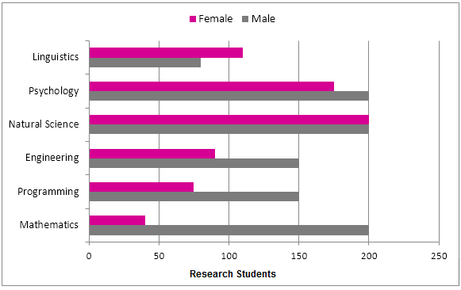
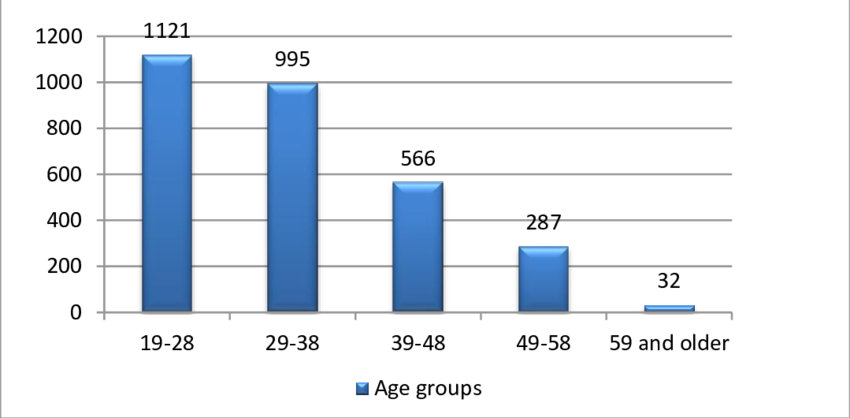

Gender
This chart compares the number of male and female research students across various academic fields. While females dominate in Psychology and Natural Science, males are more prevalent in Engineering and Mathematics, highlighting gender disparities in these areas.

Age
The chart shows the distribution of individuals by age group. Most people fall within the younger age ranges, with the largest group being 19-28 years old, followed by 29-38, and a sharp decline in older age brackets.
